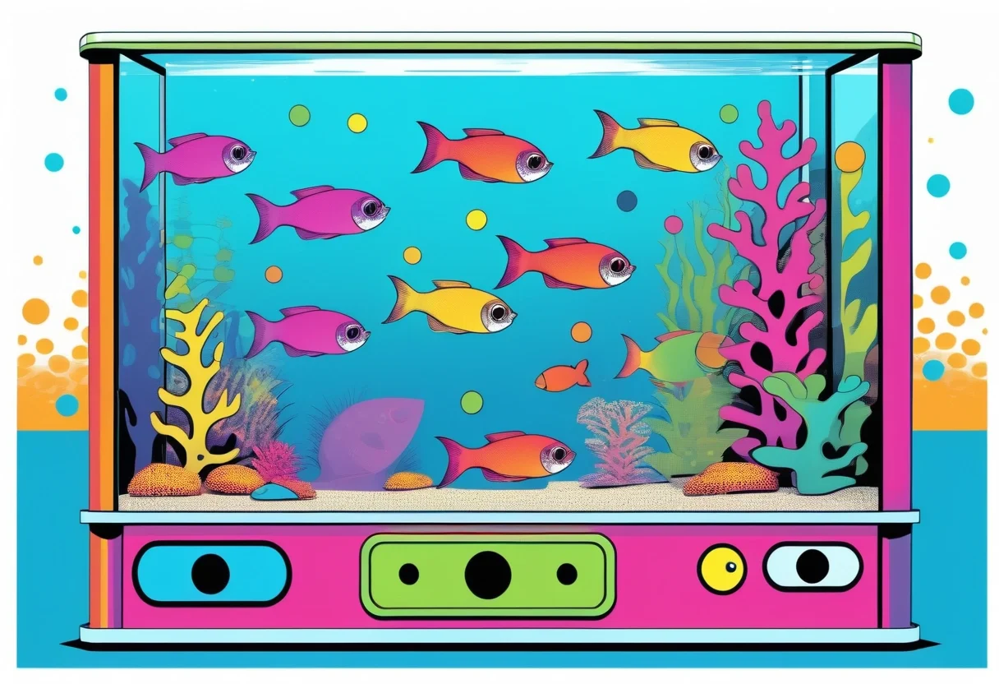

Der Juni ist für viele Aquarianer die schönste, aber auch die stressigste Zeit im Jahr: draußen lockt der Urlaub, drinnen wartet ein Aquarium, das zuverlässig weiterlaufen muss. Gesunde, adulte Fische sind erstaunlich unempfindlich gegenüber kurzen Hungerphasen, und mit der richtigen Vorbereitung übersteht dein Becken auch zwei bis drei Wochen ohne dich. Genau in dieser Hochsaison passieren allerdings die meisten Notfälle, weil unerfahrene Betreuer eingespannt werden, der Futterautomat überdosiert oder schlicht das Licht 24 Stunden durchläuft.
In diesem Guide zeige ich dir Schritt für Schritt, wie du dein Aquarium urlaubsfest machst – von der Planung über Futterpause und Futterautomat, Wassertest und Wasserwechsel, Licht und CO2 bis hin zum Notfallzettel für den Betreuer und der Eingewöhnung nach der Rückkehr. Du bekommst konkrete Checklisten, Faustregeln und klare Meinungen zu typischen Fehlern, damit du entspannt in den Urlaub starten kannst.
Bevor du an Futterautomaten, Betreuer und Zeitschaltuhren denkst, solltest du ehrlich einschätzen, wie lange du tatsächlich weg bist und was dein Besatz verträgt. Entscheidend sind drei Faktoren: Art des Besatzes, Dauer der Abwesenheit und Zustand des Beckens.
Die wichtigste Faustregel: Gesunde, adulte Fische vertragen 5–7 Tage komplette Futterpause problemlos. In dieser Zeit greifen sie auf körpereigene Reserven zurück, viele Arten fressen vermehrt Aufwuchs und Algen, und das Wasser bleibt sauber. Bei einem gut eingefahrenen Gesellschaftsbecken (ab 6 Monate Standzeit) ist eine Woche ohne Fütterung oft die gesündere Variante.
Anders sieht es bei Jungfischen, frisch eingesetzten Tieren, empfindlichen Arten (Diskus, Schmerlen, manche Zwergbuntbarsche) und bei Wirbellosen aus: Jungfische brauchen 3–5 Tage durchgehend Futter, Garnelen und Krebse sollten alle 2–3 Tage gefüttert werden. Hier ist ein Betreuer oder ein Futterautomat Pflicht.
Meine ehrliche Empfehlung: Für 90 % aller Urlaube eines normalen Gesellschaftsaquariums reicht eine sorgfältige Vorbereitung mit Futterpause völlig aus. Du sparst dir die Anschaffung und das Risiko eines defekten Futterautomaten, und deine Fische werden es dir danken.
Die Entscheidung „Futterpause" oder „Futterautomat" gehört zu den am meisten diskutierten Themen in Aquarianer-Foren. Beide Varianten haben klare Vor- und Nachteile, die richtige Antwort hängt von deiner konkreten Situation ab.
Eine kontrollierte Futterpause ist in den meisten Fällen die sicherste und einfachste Lösung. Gesunde Fische verbrennen in dieser Zeit Körperfett, die Wasserbelastung sinkt (kein überschüssiges Futter), und du brauchst keinerlei Technik, die versagen kann. Adulte Süßwasserfische kommen problemlos 7–14 Tage ohne Futter aus – in der Natur fressen sie nicht täglich, sondern oft nur alle paar Tage. Besonders gut funktioniert die Pause bei Guppys, Platys, Mollys, Salmlern, Bärblingen, Panzerwelsen und Zwergbuntbarschen. Bei Diskus, Jungfischen, Fadenfischen oder Schmerlen würde ich dagegen nicht pausieren.
Ein Futterautomat ist die richtige Wahl bei längeren Urlauben (ab 8–10 Tagen), bei empfindlichen Arten oder wenn du ein gutes Gefühl haben möchtest, dass deine Tiere weiter versorgt werden. Ein Automat ersetzt nicht die Wasserpflege, sondern ergänzt sie. Wer den Automaten aufstellt, ohne vorher Wasser gewechselt und den Filter kontrolliert zu haben, löst das falsche Problem.
| Typ | Preis | Vorteile | Nachteile |
|---|---|---|---|
| Mechanisch mit Drehteller | 15–30 € | Kein Strom, keine Batterien, günstig | Unzuverlässig, oft zu viel Futter |
| Batteriebetrieben mit Fächern | 30–60 € | Programmierbar, gleichmäßige Fütterung, Testsieger | Batterien müssen frisch sein, Futter kann verkleben |
| WLAN/App-gesteuert | ab 80 € | Flexible Steuerung, Push-Benachrichtigungen | Höherer Preis, WLAN-Abhängigkeit, mehr Fehlerquellen |
Meine Empfehlung: ein batteriebetriebener Futterautomat mit Fächern aus der mittleren Preisklasse. Er ist zuverlässig, einfach zu bedienen und reicht für 90 % aller Einsatzfälle. Achte auf Modelle mit ausreichend großem Futterbehälter (mind. 100 ml) und gleichmäßiger Dosierung.
Das ist die wichtigste Regel überhaupt: Stelle den Futterautomaten mindestens 5 Tage, besser 1–2 Wochen vor dem Urlaub auf und beobachte ihn. Prüfe dabei:
Häufigster Fehler: „Fische brauchen im Urlaub mehr Futter, weil sie sich ja nicht selbst versorgen können." Das ist komplett falsch. Fische haben einen niedrigeren Stoffwechsel als Warmblüter und vertragen eine Futterpause besser als Überfütterung. Im Zweifel lieber einmal zu wenig als einmal zu viel füttern. Überschüssiges Futter kippt das Wasser, erhöht Nitrit und kostet im schlimmsten Fall Tierleben.
Ein zuverlässiger Futterautomat ist die einfachste Lösung, um Fische während längerer Abwesenheit artgerecht und gleichmäßig zu versorgen. Achte auf batterielaufende Modelle mit Fächern und guter Dosiergenauigkeit — die Testsieger liegen preislich zwischen 30 und 60 €.
👉 Futterautomaten bei Amazon ansehenDie entscheidende Phase beginnt nicht am Abreisetag, sondern eine volle Woche vorher. Die folgende Checkliste solltest du abarbeiten – egal ob du dich für Futterpause oder Futterautomat entschieden hast.
| Wann | Aufgabe | Hinweis |
|---|---|---|
| 7 Tage vorher | Wassertest: NO2, NO3, pH, KH, GH messen | Nur starten, wenn NO2 nicht nachweisbar und NO3 unter 50 mg/l |
| 7 Tage vorher | Futterautomat aufstellen und 5 Tage testen | Dosierung, Verkleben, Batterien prüfen |
| 5 Tage vorher | Großer Wasserwechsel 30–40 % | Frischwasser mit Wasseraufbereiter, gleiche Temperatur |
| 5 Tage vorher | Filter mechanisch reinigen (Schwämme ausspülen) | Nur in abgestandenem Aquarienwasser, nicht unter dem Hahn! |
| 3 Tage vorher | Glas reinigen, Pflanzen schneiden, Mulm absaugen | Tote Blätter müssen raus, sie belasten das Wasser |
| 2 Tage vorher | Zeitschaltuhr, Beleuchtung, CO2 und Heizstab prüfen | Licht 8–10 h/Tag, Solltemperatur halten |
| 24 h vorher | Letzter Fütterungstag + Notfallzettel für Betreuer | Futterautomat bestücken, alle Notfallnummern notieren |
Vor dem Urlaub solltest du mindestens Nitrit (NO2), Nitrat (NO3) und den pH-Wert messen. NO2 sollte gar nicht nachweisbar sein – ein Wert über 0,1 mg/l deutet auf eine Filterstörung hin. NO3 darf im Gesellschaftsaquarium bis 50 mg/l betragen, bei empfindlichen Arten (Diskus, Garnelen) besser unter 25 mg/l. Der pH-Wert sollte stabil sein, idealerweise zwischen 6,5 und 7,8.
Wenn dein Wassertest Auffälligkeiten zeigt, hast du noch genug Zeit, mit einem größeren Wasserwechsel und einer Filterkontrolle gegenzusteuern. Eine Woche Vorbereitung reicht für die meisten Probleme.
Der Filter ist das Herzstück deines Aquariums und der häufigste Pflegefehler im Urlaub. Filtermedien niemals unter dem Wasserhahn reinigen – Chlor und Temperaturschock töten einen Großteil der Bakterien. Stattdessen:
Eine gründliche Filterreinigung unmittelbar vor dem Urlaub ist sogar kontraproduktiv: Sie kann zu einem kurzfristigen Bakterienverlust führen, was in Kombination mit Überfütterung zum Nitritpeak werden kann. Lieber zwei Wochen vorher moderat reinigen, als am Abreisetag eine Radikalkur.
Der größte Fehler, den Aquarianer im Urlaub machen: Sie bitten den Betreuer, einen Wasserwechsel durchzuführen. Lass das bleiben. Ein unerfahrener Helfer dosiert den Wasseraufbereiter falsch, hat eine falsche Temperatur, schlägt den Eimer um oder saugt versehentlich einen Fisch an. Das Risiko ist deutlich höher als der Nutzen.
Der große Wasserwechsel gehört 24 Stunden vor die Abreise, nicht in den Urlaub hinein. Mein Standardschema:
Was der Betreuer NICHT tun soll: Wasser wechseln, Wasser nachfüllen, Filter reinigen, Pflanzen schneiden, Technik anfassen.
Im Hochsommer (Juni–August) verdunstet in einem offenen Aquarium täglich bis zu einem Liter Wasser. Ein zu niedriger Wasserstand kann den Filter trockenlaufen lassen, ein zu hoher Salzkonzentrat-Effekt ist möglich. Lösung:
Licht und Technik laufen 24/7, auch wenn du nicht da bist. Stromausfälle, defekte Zeitschaltuhren oder falsch eingestellte Dimmer sind die häufigsten technischen Ursachen für Probleme im Urlaub.
Prüfe deine Zeitschaltuhr mindestens drei Tage vor dem Urlaub. Viele digitale Modelle verlieren nach einem Stromausfall die Einstellung und springen auf 24-Stunden-Dauerlicht, was Algen fördert und Fische stresst.
Klare Antwort: Nein, CO2 weiter normal laufen lassen. Deine Pflanzen verbrauchen auch in deiner Abwesenheit Nährstoffe und produzieren Sauerstoff. Wird die CO2-Zufuhr unterbrochen, stellen die Pflanzen das Wachstum ein, Algen können profitieren.
Der Heizstab gehört zu den wichtigsten Verbrauchern. Prüfe vor dem Urlaub:
Stromausfall-Tipp: Für den Fall eines mehrstündigen Stromausfalls kann eine Powerbank mit USB-Anschluss über einen kleinen Luftpumpen-Adapter die Sauerstoffzufuhr sichern. In den meisten Fällen reicht es aber, den Filter nach Rückkehr der Stromversorgung einfach wieder einzuschalten – deine Fische überstehen 4–6 Stunden ohne Filter problemlos, solange die Wasseroberfläche bewegt wird.
Der wichtigste Satz in diesem Artikel: Lass niemals einen unerfahrenen Nachbarn oder Verwandten ohne gründliche Einweisung an dein Aquarium. Die meisten Notfälle im Urlaub entstehen nicht durch mangelnde Technik, sondern durch überforderte Helfer, die zu viel des Guten tun wollen.
Schreibe eine einfache, kurze Anleitung auf einem laminierten Zettel. Verwende einfache Sätze, Nummerierungen und Emojis. Die Anleitung sollte diese Punkte enthalten:
Besprich die Anleitung persönlich mit dem Betreuer, am besten direkt am Aquarium. Zeige ihm, wo das Futter steht, wie eine Portion aussieht, und welche Knöpfe er auf keinen Fall drücken darf.
| Geeignet | Nicht geeignet |
|---|---|
| Erfahrene Aquarianer mit eigenem Becken | Nachbarn ohne Aquarien-Erfahrung |
| Familienmitglieder, die du eingewiesen hast | Kinder unter 14 Jahren ohne Aufsicht |
| Freunde aus dem Aquarienverein | Personen, die „schon mal einen Goldfisch hatten" |
Wenn du niemand Geeigneten findest, ist ein Futterautomat die deutlich bessere Lösung als ein unerfahrener Helfer.
Erfahrungswert: Die niedrigste Ausfallrate hatte ich, wenn ich entweder komplett auf Futterpause gesetzt habe (5–7 Tage, kein Helfer nötig) oder einen erfahrenen Aquarianer mit klarer Aufgabenliste beauftragt habe. Alles dazwischen war fehleranfällig.
Der Notfallzettel gehört an die Innenseite deiner Aquarien-Schranktür oder direkt neben das Becken. Er muss auch dann verständlich sein, wenn du nicht erreichbar bist und der Betreuer gestresst reagiert. Halte ihn so kurz und konkret wie möglich – maximal eine Seite.
Notiere folgende Punkte gut sichtbar:
| Notfall | Was passiert ist | Was der Betreuer tun soll |
|---|---|---|
| Stromausfall | Filter, Licht und Heizung stehen still | Nichts tun, abwarten. Bei Rückkehr des Stroms alles wieder einschalten. Fische überstehen 4–6 h problemlos. |
| Fisch stirbt | Ein einzelner Fisch liegt tot am Boden | Fisch mit Kescher entnehmen, in Zeitung einwickeln, in den Restmüll. Nicht in die Toilette! Ruhe bewahren. |
| Wasser trüb | Becken plötzlich milchig oder grünlich | Foto machen, dir schicken, Anweisung abwarten. Kein Wasser wechseln! |
| Filter läuft nicht | Brummen, aber kein Wasserfluss, oder Stille | Nicht selbst reparieren! Foto machen, dir schicken. Notfalls für mehr Sauerstoffzufuhr kurz den Ausströmer einschalten. |
| Heizstab defekt | Temperatur sinkt unter 22 °C oder steigt über 30 °C | Heizstab aus Steckdose ziehen, dir Bescheid geben. Bei Überhitzung ggf. Deckel öffnen und kühles Tuch auf den Beckenrand legen. |
Drucke diesen Zettel aus, laminiere ihn (alternativ in Klarsichthülle), und hänge ihn so auf, dass der Betreuer ihn sofort findet. Eine Vorlage findest du in unserem Aquarium-Pflegeroutine-Guide.
Du bist zurück, das Aquarium läuft, alles scheint in Ordnung. In den ersten 24 Stunden nach der Rückkehr solltest du eine systematische Eingewöhnung durchführen. So erkennst du Probleme frühzeitig und stabilisierst das System.
Nicht jeder Auffälligkeit ist eine Krise. Leichte Veränderungen normalisieren sich oft innerhalb einer Woche. Handeln solltest du bei:
Rückkehr-Bonus: Gönn deinen Fischen nach der Reise nicht direkt eine Mega-Fütterung. Gerade adulte Tiere sind den Hunger gewohnt und freuen sich über eine kleine Portion. Eine 2–3-tägige sanfte Eingewöhnung mit langsam steigender Futtermenge ist deutlich besser als ein Festmahl.
Adulte, gesunde Fische vertragen 7–14 Tage Futterpause problemlos, einzelne robuste Arten sogar 3 Wochen. Jungfische brauchen 3–5 Tage durchgehend Futter, Garnelen sollten alle 2–3 Tage gefüttert werden. Fische haben in der Natur keinen täglichen Futterrhythmus.
Bei 3–7 Tagen reicht eine Futterpause völlig. Bei 8–14 Tagen mit adulten Fischen ist ein Futterautomat sinnvoll, bei Jungfischen, Garnelen und empfindlichen Arten ist er Pflicht. Wichtig: Den Automat vorher 5 Tage testen.
Am besten ein erfahrener Aquarianer mit eigenem Becken. Familienmitglieder oder Freunde funktionieren nur, wenn du sie intensiv einweist. Ungeübte Nachbarn sind die schlechteste Wahl – sie überfüttern und rufen bei jeder Auffälligkeit panisch an.
Nein, niemals den Filter abschalten. Die Filterbakterien sterben ohne Durchströmung innerhalb von 4–6 Stunden ab. Das Aquarium kippt nach dem Urlaub, du erkennst es erst nach Tagen. Bei Stromausfall den Filter nach Rückkehr einfach wieder einschalten.
Nein, das ist nicht artgerecht. Selbst eingefrorenes Futter verliert Vitamine, verändert die Konsistenz und kann Bakterien entwickeln. Investiere in hochwertiges Frostfutter (Mückenlarven, Artemia, Daphnien).
Bewährte Modelle von Eheim, JBL oder Tetra liegen zwischen 30 und 60 €. Günstigere Mechanik-Modelle (15–30 €) sind oft unzuverlässig, smarte WLAN-Automaten (ab 80 €) nur sinnvoll, wenn du tatsächlich fernsteuern willst.
In den ersten 4–6 Stunden passiert wenig, solange die Wasseroberfläche bewegt wird. Bei längerem Ausfall stirbt die Filterbiologie langsam ab. Schalte nach Rückkehr des Stroms den Filter wieder ein und mache 2–3 Tage kleinere Wasserwechsel (10–15 %), um den Nitritpeak abzufangen.
Im Juni–August erreichen viele Wohnungen Temperaturen, die für tropische Fische kritisch werden. Lüfter über der Wasseroberfläche, kühlerer Standort (Nordseite, Keller) und ggf. Eisflaschen in Tüchern helfen. Achte besonders auf Sauerstoffmangel: Warmes Wasser bindet weniger O2, ein Ausströmer kann lebensrettend sein.
Fazit: Ein Aquarium urlaubsfest zu machen ist keine Raketenwissenschaft, erfordert aber eine Woche konsequenter Vorbereitung. Die wichtigsten Bausteine: Wassertest und großer Wasserwechsel 5–7 Tage vorher, Futterautomat 1–2 Wochen testen, klare schriftliche Anleitung für den Betreuer, Notfallzettel sichtbar aufhängen. Für 90 % aller Gesellschaftsbecken reicht eine kontrollierte Futterpause von 5–7 Tagen völlig aus, alles andere löst mehr Stress aus als es nutzt. Wer diese Schritte befolgt, kann seinen Urlaub wirklich genießen – und kommt zu einem gesunden Aquarium zurück.
Stand: Juni 2026 – alle Angaben basieren auf langjähriger Praxiserfahrung und aktuellen Empfehlungen der führenden Aquaristik-Fachzeitschriften. Produktempfehlungen wurden redaktionell ausgewählt.